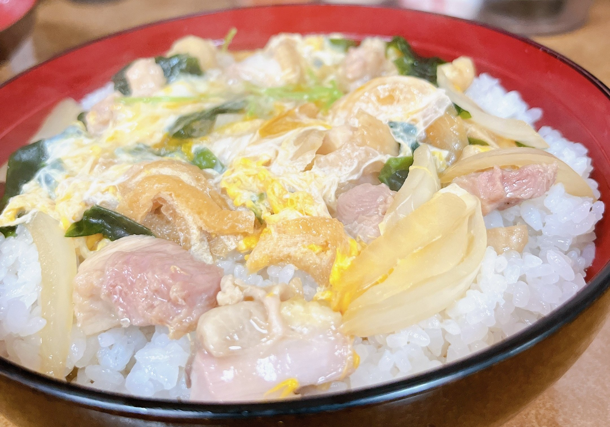
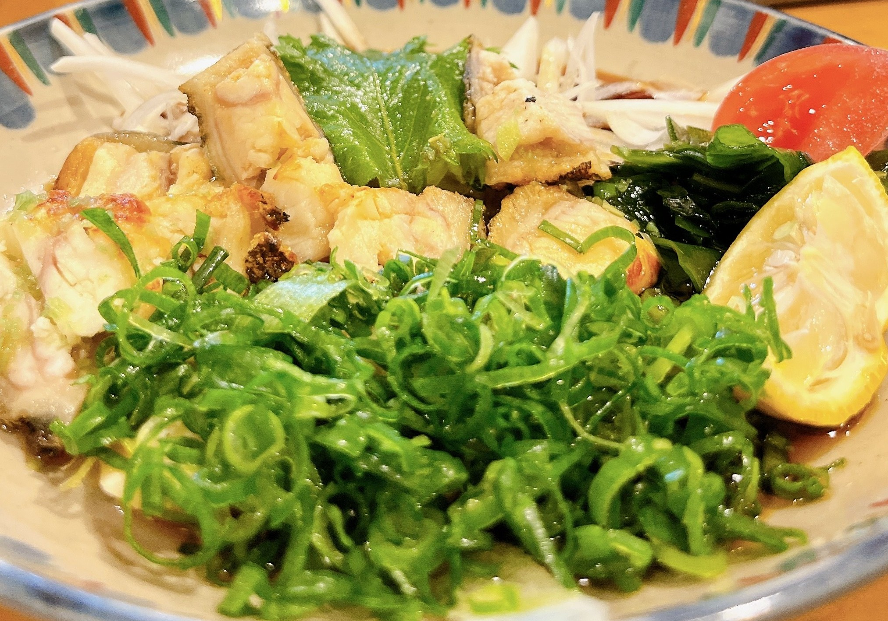

～香川県＆徳島県＆愛媛県編～
2022年12月6日～8日に岡山県と広島県を旅行した記事になります！
▶ 今回の旅の目次
高松城跡
高松城跡
営業時間：4月～9月 7:00～18:00
10月～3月 8:30～17:00(東門)定休日：12月29日～12月31日
駐車場：あり
住所：香川県高松市玉藻町2-1
URL： 高松城【玉藻公園】公式ウェブサイト
金刀比羅宮
父母ヶ浜
津嶋神社
安兵衛

井戸寺
国分寺
かずら橋

かずら橋
営業時間：4月～6月 8:00～18:00
7月～8月 7:30～18:30
9月～3月 8:00～17:00定休日：なし
駐車場：あり 普通車：500円
住所：徳島県三好市西祖谷山村善徳162-2
URL： 大歩危祖谷ナビ
やま里
うわじまの料理や 有明

うわじまの料理や 有明
営業時間：11:30～14:00 16:00～22:00
定休日：月
予約可否：予約可
駐車場：あり
TEL：0895-22-8310
住所：愛媛県宇和島市丸之内5-4-12
URL： うわじまの料理や 有明公式サイト
宇和島城

宇和島城
営業時間：11月～2月 9:00～16:00
3月～10月 9:00～17:00定休日：なし
駐車場：あり 普通車：1時間100円
住所：愛媛県宇和島市曙町1番地
URL： 宇和島公式サイト
大洲城
石手寺
五志喜

郷土料理 五志喜
営業時間：11:00～14:00 17:00～21:00
定休日：不定休
予約可否：予約可
駐車場：なし
TEL：050-5571-3318
住所：愛媛県松山市三番町3-5-4
URL： 食べログで見る
今治城
吹揚神社
がいや丸

馳走宇和海 がいや丸
営業時間：11:00～14:00 17:00～23:00(月・火・水・木・金)
11:00～23:00(土・日・祝)定休日：なし
予約可否：予約可
駐車場：あり
TEL：089-906-8675
住所：愛媛県松山市衣山1-188 パルティ・フジ衣山
URL： 食べログで見る
松山城

松山城
営業時間：2月～7月 9:00～17:00
8月 9:00～17:00
12月～1月 9:00～16:00定休日：12月第3水曜日
駐車場：あり 普通車：2時間420円 30分ごと100円
住所：愛媛県松山市大街道3丁目2-46
南国SA カツオ丼

南国SA フードコート
営業時間：7:00～22:00
定休日：なし
予約可否：予約不可
駐車場：あり
TEL：088-866-5701
住所：高知県南国市岡豊町小蓮1210-1 高知自動車道 南国サービスエリア上り線
URL： 食べログで見る
走行距離


いかがでしたでしょうか！